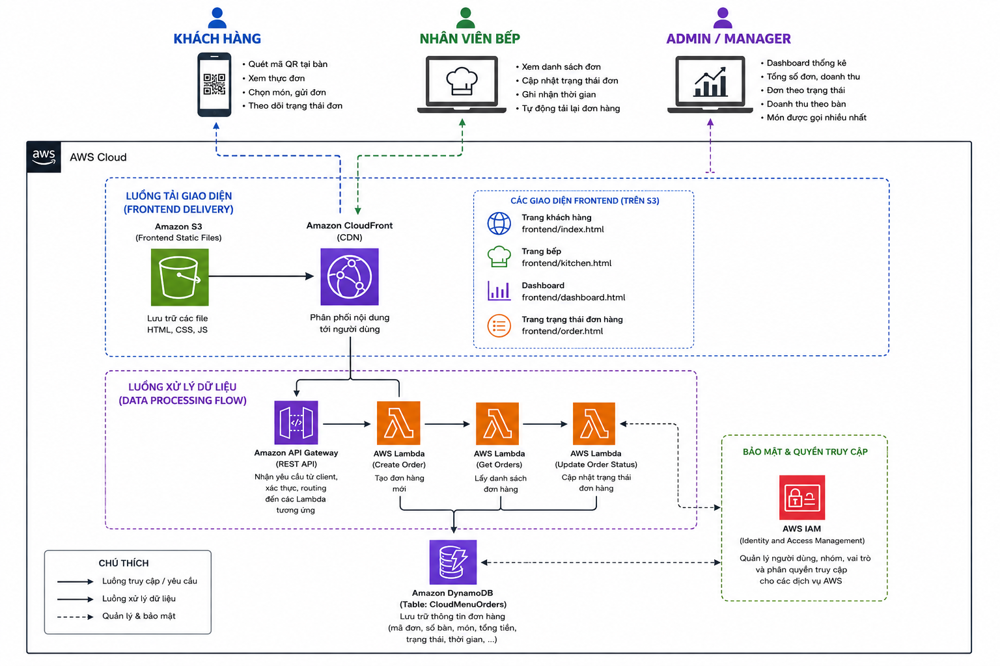

CloudMenu is a table-side online ordering system designed to help customers place orders quickly and conveniently through a unique QR code assigned to each table.
The system allows customers to use their smartphones to scan the QR code at their table to open the menu, automatically identify the table number, browse and search for dishes, filter dishes by category, add items to the shopping cart, and submit orders. After an order is submitted, customers can track its status through PENDING, PREPARING, and COMPLETED, as well as view the order time, waiting time, and estimated preparation time.
For kitchen staff, the system provides a dedicated interface to view the list of orders, including dish information, table numbers, and total amounts. Kitchen staff can also update the preparation status and record the order completion time.
In addition, the system provides a Dashboard for Admin/Manager users, allowing them to monitor the total number of orders, total revenue, orders by status, revenue by table, most frequently ordered dishes, and the total number of dishes ordered.
CloudMenu is deployed using a Serverless architecture on Amazon Web Services (AWS). The frontend is built with HTML, CSS, and JavaScript, hosted on Amazon S3, and distributed through Amazon CloudFront. Requests from the frontend are handled through Amazon API Gateway and AWS Lambda, while order data is stored and managed in Amazon DynamoDB. AWS Identity and Access Management (IAM) is used to manage access permissions and secure AWS resources.
This architecture reduces the system’s dependence on traditional server infrastructure while taking advantage of AWS managed and serverless services to build a flexible and scalable online table-ordering system.
For a table-side online ordering system, fast order processing, accurate data management, and allowing customers to track their order status are important factors. If the system is deployed using a traditional server-based model or managed through separate infrastructure components, several issues may arise:
To address the above issues, CloudMenu is built using a Serverless architecture on AWS, leveraging AWS managed services to reduce server management overhead and improve the scalability of the system:
With this architecture, CloudMenu can take advantage of the scalability and managed services provided by AWS to build a flexible online ordering system, reduce server administration overhead, and align with the cloud-native application model.
Proposed Architecture Based on the Application Model in the Cloud Environment:

AWS Services
| Service | Role in CloudMenu |
|---|---|
| Amazon S3 | Stores CloudMenu frontend files such as HTML, CSS, JavaScript, and other static resources. The frontend is uploaded to S3 for application deployment. |
| Amazon CloudFront | Distributes the frontend from Amazon S3 to users through a CDN, allowing customers, kitchen staff, and Managers to access the CloudMenu interfaces through the CloudFront URL. |
| Amazon API Gateway | Provides API endpoints for communication between the frontend and backend. It handles requests such as creating orders, retrieving order lists, and updating order statuses. The returned order data can be used to display and aggregate information on the Dashboard. |
| AWS Lambda | IHandles the system’s business logic using a serverless architecture. Lambda receives requests from API Gateway, processes the data, and performs read/write operations on DynamoDB. |
| Amazon DynamoDB | Serves as the primary NoSQL database for CloudMenu. The CloudMenuOrders table stores order information such as orderId, tableNumber, status, items, totalAmount, createdAt, updatedAt, and completedAt. |
| AWS Identity and Access Management (IAM) | Manages access permissions between AWS resources. IAM Roles are used to grant AWS Lambda functions the necessary permissions to perform required operations on the Amazon DynamoDB table. |
Weeks 1–2 — Requirements Analysis & Frontend Development
Weeks 3–4 — Frontend Deployment & Serverless Backend Development
Weeks 5–6 — DynamoDB Integration & Business Logic Completion
Weeks 7–8 — Security, Testing & System Finalization
The following costs are estimated monthly costs (USD) for the CloudMenu architecture using AWS Serverless services. Actual costs may vary depending on the number of requests, data storage capacity, amount of data transferred, and Lambda execution time.
| AWS Service | Component / Usage | Cost (USD/month) |
|---|---|---|
| Amazon S3 | Hosting the frontend and static resources | $0 - $2 |
| Amazon CloudFront | Distributing the frontend and content to users | $0 - $10 |
| Amazon API Gateway | API endpoints and handling requests from the frontend | $0 - $5 |
| AWS Lambda | Processing business logic and CloudMenu APIs | $0 - $5 |
| Amazon DynamoDB | Storing and querying order data | $0 - $5 |
| AWS IAM | Managing access permissions to AWS resources | No direct charge |
| TOTAL AWS COST | $0 - $27 |
Note: These are only reference estimates for a development environment or a system with low traffic. AWS Serverless services are primarily charged based on usage, so actual costs may be lower or higher depending on the number of users and requests handled by the system.
Cost control recommendations:
During the deployment and operation of CloudMenu on AWS, the system may encounter several risks related to performance, data integrity, access permissions, and service configuration.
Risk of increased costs as the number of requests grows: As the number of customers accessing the system, placing orders, and tracking order statuses increases, the number of requests to API Gateway, Lambda, and DynamoDB will also increase. Mitigation: Regularly monitor AWS usage and costs, optimize APIs, and minimize unnecessary data read/write operations.
Risk of errors when multiple customers place orders simultaneously: During peak hours, many customers may scan QR codes and submit orders at the same time, resulting in a sudden increase in requests. Mitigation: Use the Serverless architecture with API Gateway, Lambda, and DynamoDB to handle varying request volumes, and perform load testing with concurrent requests.
Risk of inconsistent order statuses: Orders must follow the correct status flow: PENDING → PREPARING → COMPLETED. If the status is not processed correctly, the information displayed to customers and kitchen staff may become inconsistent. Mitigation: Validate the order status before updating DynamoDB and test different order update scenarios from the kitchen interface.
Risk of lost or incorrect order data: Order information such as table number, item list, total amount, and order status is important to the system. Errors during DynamoDB write or update operations may affect order information. Mitigation: Validate input data, design the DynamoDB structure appropriately, and implement error handling in Lambda before returning responses to the frontend.
Risk of inappropriate AWS permissions: If Lambda functions or other AWS resources are granted excessive permissions, this may increase the risk of unauthorized access or unintended access to other resources. Mitigation: Follow the Least Privilege principle when using AWS IAM and grant Lambda only the permissions required to access DynamoDB and other necessary resources.
Risk of API or Lambda failures: Errors in API Gateway or Lambda may prevent customers from submitting orders, kitchen staff from updating order statuses, or Managers from accessing the Dashboard. Mitigation: Test the main APIs, including Create Order, Get Orders, and Update Order Status, and monitor Lambda logs to identify and resolve errors.
Risk of frontend inaccessibility: Configuration or deployment issues with Amazon S3 or CloudFront may prevent customers, kitchen staff, or Managers from accessing the CloudMenu interfaces. Mitigation: Verify the frontend upload process to S3, review the CloudFront configuration, and test access through a web browser before deploying the system for actual use.
Risk of CORS issues when the frontend calls the API: If API Gateway does not allow requests from the frontend origin, requests from the CloudMenu interfaces may be blocked by the browser. Mitigation: Configure CORS on API Gateway appropriately for the domain used by CloudFront and test API requests in the deployed environment.